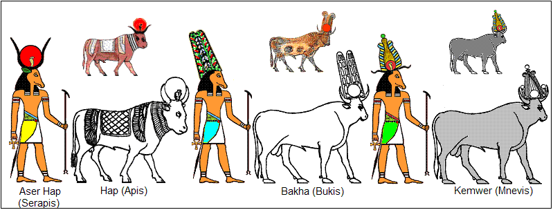
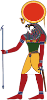

Prema egipatskoj mitologiji, prvotno je postojao ocean Nun, koji se spominje kao i bog. Iz njega je izronio brežuljak. Ali postoje 3 mita o nastanku bogova iz Nuna. Prvi potjeèe iz Heliopolisa, Grada Sunca, te govori da je na poèetku iz Nuna roðen bog Sunca. Izvorni mit kaže da je to Atum, ali je poslije u mitu spominjan Ra. U Novom kraljevstvu, mit govori da je Amon-Ra bog Sunca. Bog Sunca je ispljunuo Šua i Tefnut, blizance, a iz njegovog oka je nastala Hathor. Drugi mit dolazi iz Memfisa, gdje se vjerovalo da je stvoritelj svega i Atumov otac Ptah, bog umjetnika. Treæi mit, iz Hermopolisa, kaže da je na poèetku postojao i ocean Nun, i bog Nun. Bog Nun imao je ženu Naunet, a oboje su bili vodene sile. Uz njih su bili još neki bogovi, a važniji su Amon i Amaunet. Amon u ovom mitu nije Sunce, veæ život.

 Bog sunca Ra